Salut, je m'appelle Timothé Velasco
Je suis développeur en 2ᵉ année de BUT informatique à l'IUT de Bordeaux
À propos de moi
Je suis un étudiant / développeur intéressé par le développement logiciel, la visualisation de données et la conception d’algorithmes. Ce portfolio regroupe mes projets, mes compétences et mes outils préférés que j'ai développé lors de mes études ou personnellement.
Mes créations
Installation de poste
BUT1 | Terminé
Aperçu:
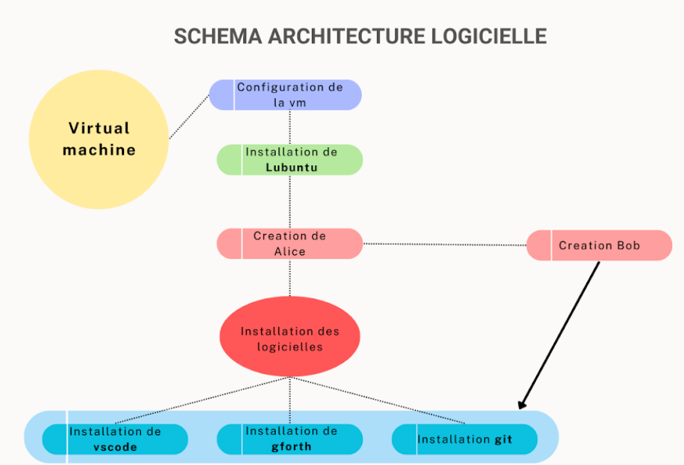 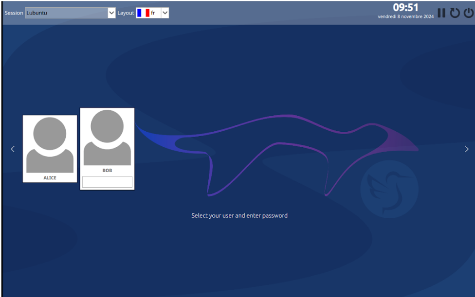Faire des choix techniques pour préparer et configurer des machines virtuelles sous Linux selon un cahier des charges donné.
Créer un fichier tutoriel pour guider l'utilisateur à réaliser l'installation des sessions et les configurer.
- Bash
- Linux
Algorithmes de jeu de plateau
BUT1 | Terminé
Aperçu:
 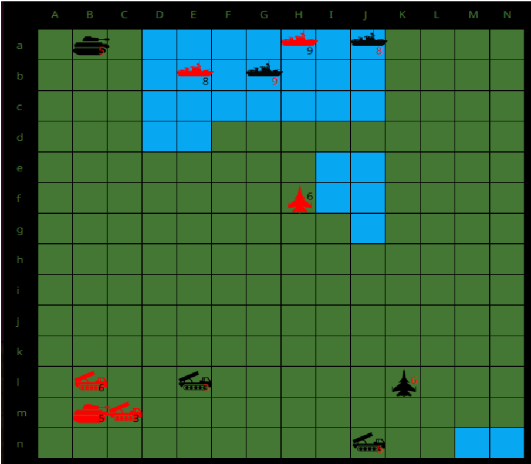
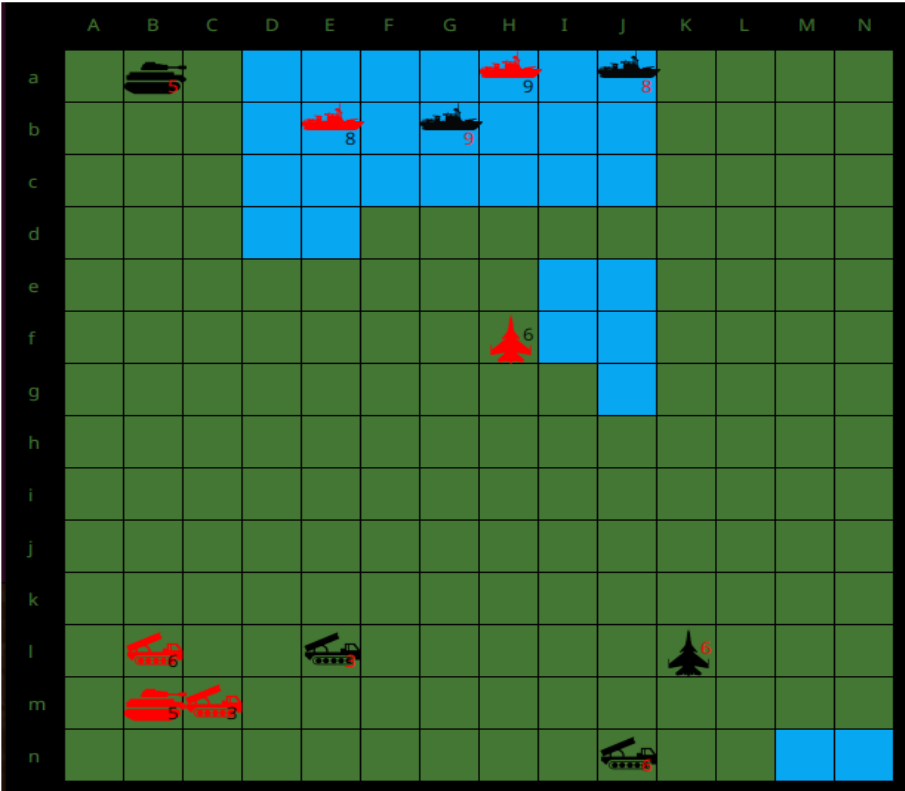
Implémentation de fonctionnalités dans un donné pour un jeu de plateau en 2D.
Test des implémentations par un script bash donné pour passer à l'implémentation suivante.
Création d'IAs suivant des algorithmes et tournoi d'IA avec celle des autres étudiants.
- Java
- Git
- bash
Visualisation de graphe
BUT1 | Terminé
Aperçu:
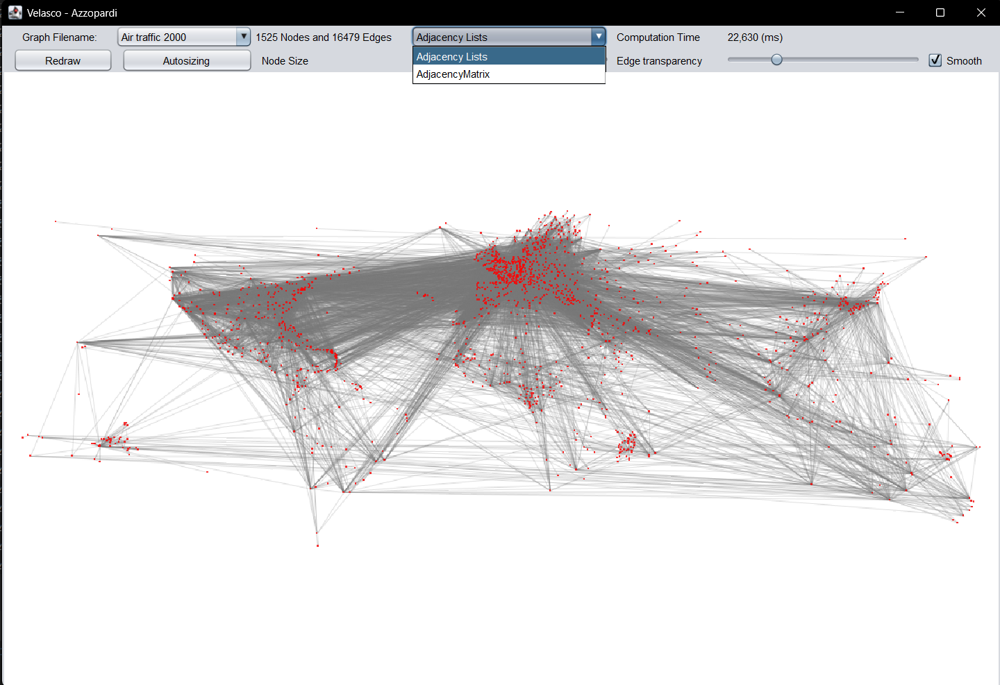 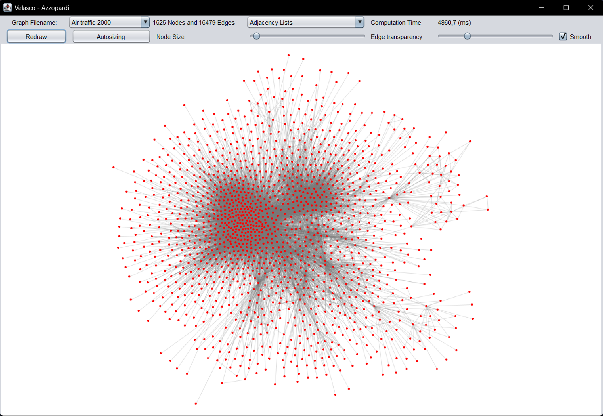 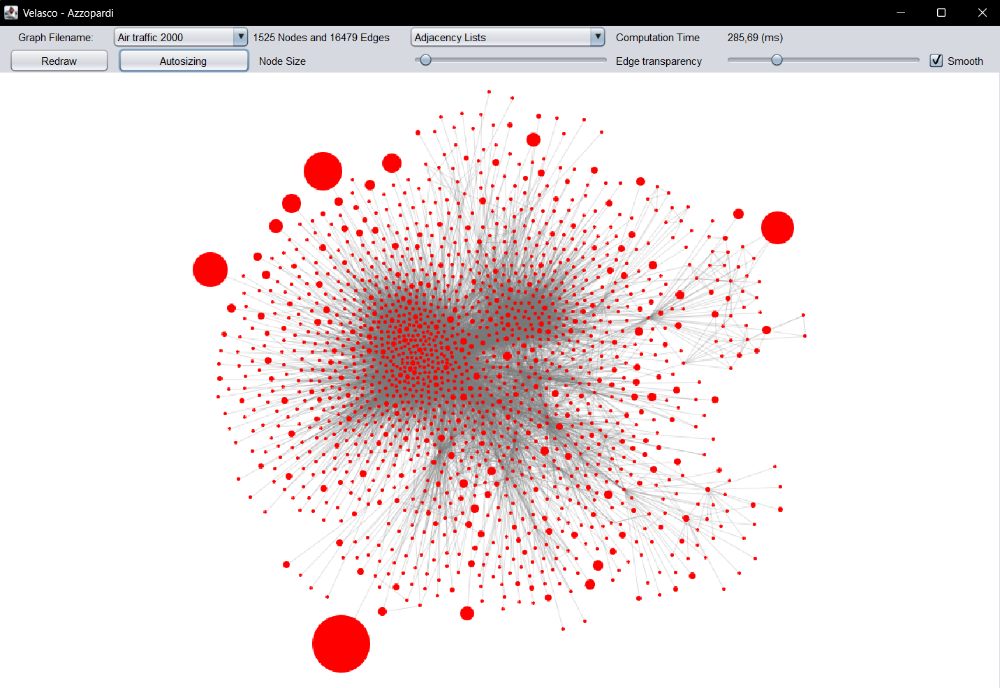Implémentation de fonctionnalités de visualisation de différents types de graphe (Non dirigés et dirigés).
Création d'algorithmes de graphe tel que: Force directed, et Auto sizing.
Application de connaissances théoriques en graphe.
Application de connaissances théoriques en graphe.
Calcul de couts algorithmiques.
Approfondissement en P.O.O.
Modélisation de la structure du code avec de l'UML.
- Java
- Git
- UML
Développement d'application
BUT1 | Terminé
Aperçu:
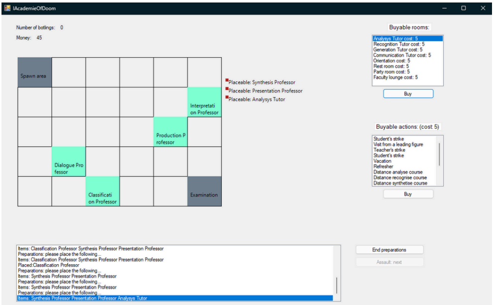Jeu de simulation/tower‑defense orienté objets en C#.
Implémenter sur une IHM des dialogues d’inspection, des drag‑and‑drop.
Améliorer la présentation des résultats ainsi que l'accessibilité/ergonomie.
Répartir les taches et mettre en relation l'avancement du projet avec mes camarades.
POO en C# avec conception, extension de classes, héritage, énumérations, gestion d’états de jeu et invariants, en C# avec bonnes pratiques.
Versionnage du code avec GIT.
Débogage et lecture d'erreurs.
Préparation de dossier de conception visant à préparer l'implémentation des fonctionnalités demandé.
- C#
- Git
- UML
Logiciel de visualisation de données.
BUT1 | Terminé
Aperçu:
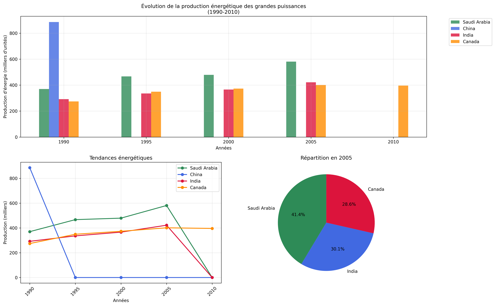Application de visualisation de données environnementales développée pour une "entreprise", permettant de créer des graphiques interactifs sur les thématiques climatiques, économiques et démographiques.
Gestion d'équipe de 6 développeurs avec réorganisation dynamique suite à l'absence d'un membre.
Planification Gantt avec estimation temporelle et ajustement des ressources en cours de projet.
Développement d'algorithmes statistiques, manipulation de données SQL et génération de graphiques en Python.
Création d'une interface interactive permettant la sélection d'options de visualisation des données.
Conception, structuration et optimisation pour le stockage de datasets environnementaux volumineux.
- C#
- Python
- SQL
- Gantt
- Git
- UML
Spotify Web App — Interface musicale moderne
Projet personnel | En cours
Aperçu:
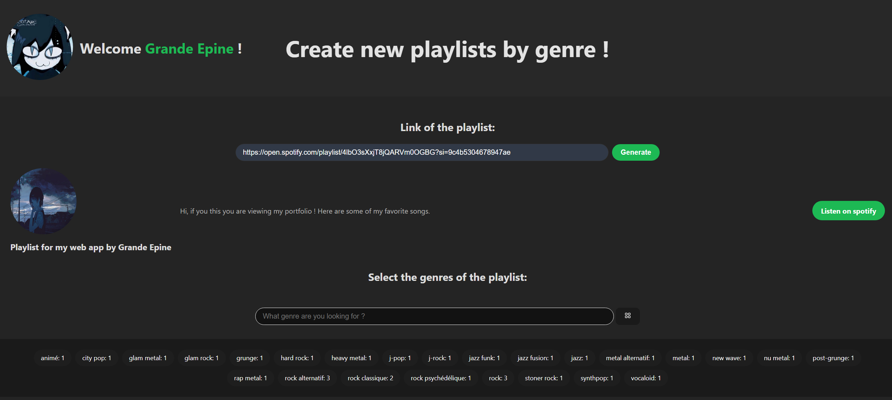 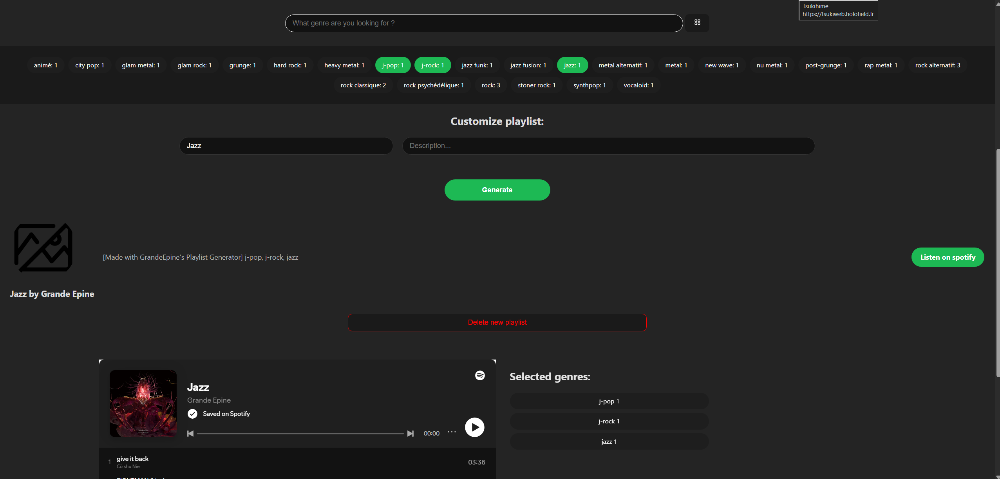Application web de gestion de playlist Spotify avec interface fidèle à l'application.
Utilise une authentification OAuth 2.0, gestion de playlists et affichage de contenu personnalisé.
Utilisation de l'API de spotify pour web et design responsive.
Création de playlist en se basant sur les genres musicaux contenus dans une playlist donnée par l'utilisateur.
Intéractions avec les playlists de l'utilisateur et personnalisation des créations de playlist.
- HTML
- CSS
- JS
- REST API